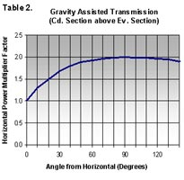
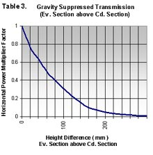
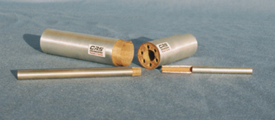

The
following tables provide design engineers with as much information as
is possible here for the CRS Engineering Standard Range Heat-pipes. (Table 1) needs to be read in conjunction with (Table 2) and (Table 3), for overall power transmission capabilities.
Power Handling Capability
The maximum power transmission ratings stated in (Table 1).
opposite are for CRS 5000 ST series and HT series Heat-pipes operating
in a horizontal orientation (i.e. virtual zero gravitational
influence).
The temperature ranges given of + 20°C to + 120°C are mean operating
temperatures taken at a mid-measurement point between the heat input
and heat output sections arranged at either end.
Table 1
CRS- Series 5000
( Diameter mm )
Maximum Power Handling Capability ( Watts )
@+20°C
@+40°C
@+60°C
@+80°C
@+120°C
2.0
9.0
11.0
12.0
13.0
14.0
2.5
12.5
16.0
17.5
19.5
21.5
3.0
16.0
23.5
24.5
26.5
29.0
4.0
22.0
27.5
30.5
32.0
37.0
5.0
50.0
58.0
63.0
65.0
68.0
6.0
72.0
86.0
93.0
98.0
108.0
8.0
90.0
108.0
115.0
122.0
134.0
10.0
112.0
134.0
143.0
152.0
169.0
12.0
148.0
178.0
186.0
197.0
218.0
Effects of Gravity upon Capillary Action
The
function of a Heat-pipe is dependant upon an effective capillary action
system to return the working fluid from the condenser section (Cd)
where cooling is applied, to the evaporator section (Ev) where heat
input to the Heat-pipe is applied. This function is served by the
porous lining wick structure or “wicking system” which is built into
the Heat-pipe. Gravity has an important influence on the thermal
performance of Heat-pipes. As can be seen in (Table 2) gravity
can be used to advantage to increase the thermal transmission
capability to up to twice that of the maximum horizontal position rated
value shown in (Table 1). (i.e. provided that the Ev section is
below the Cd section). In this orientation, gravity assists the return
of the return working fluid.

Opposing Effects of Gravity .…
In the opposing mode, i.e. with Ev section high, and driving heat
downwards, the Heat-pipe function is now totally dependent upon capillary
action for the return the working fluid to the evaporator and to overcome
the gravitational restraint. (Table 3) shows the effects
of this, which is to repress the performance capability. In this situation
the Heat-pipe capillary pumping capability must work against the static
head difference between the Cd and Ev sections. For particular applications
where orientational constraints demand Heat-pipes should operate in
this mode, CRS engineering can offer Heat-pipes with special anti-gravity
wicking systems. These SSX series Heat-pipes use wick structures that
develop an increased capillary pumping action over that of the standard
series. SSX series Heat-pipes have typically an increased diametrical size
for a given value of power handling capability.


Photo showing sections of Heat-pipes.(left)
Structures can be of sintered metallic lining and of multi layer woven
metallic lining depending upon particular performance characteristics
requirements.
For more information assistance with thermal solution
design, considerations and concepts, consult CRS Engineering Ltd for
an appraisal of your application…… see Thermal
Solutions Enquiry Check List